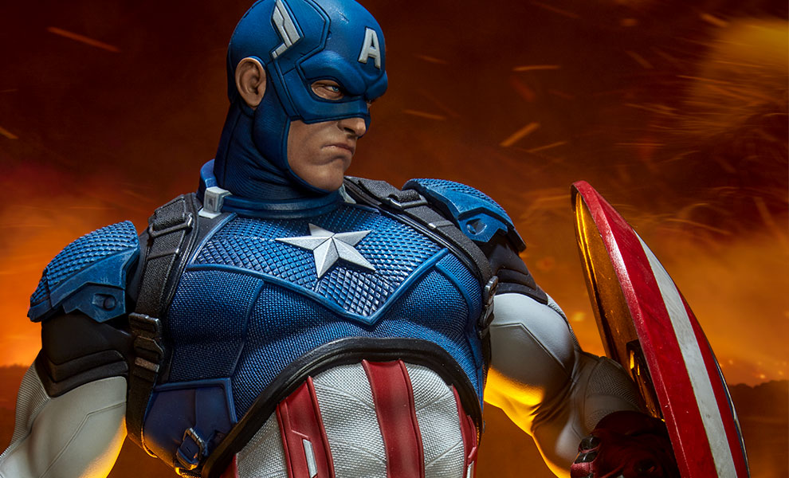

My Favorite Super Hereos

Spiderman
Peter Parker a normal boy until he was bitten by a radioactive spider that turned him in to the webslinging superhereo
Star Lord
Peter Quill of the Gardians of the Galaxy created a band of misfits to protect the galaxy

Captain America
Roger Stevens known as "The Cap" with The Avengers